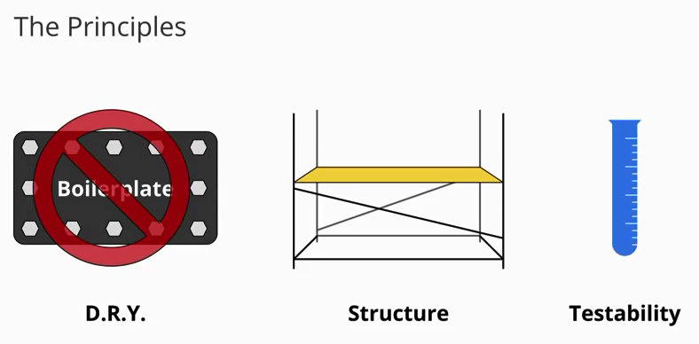
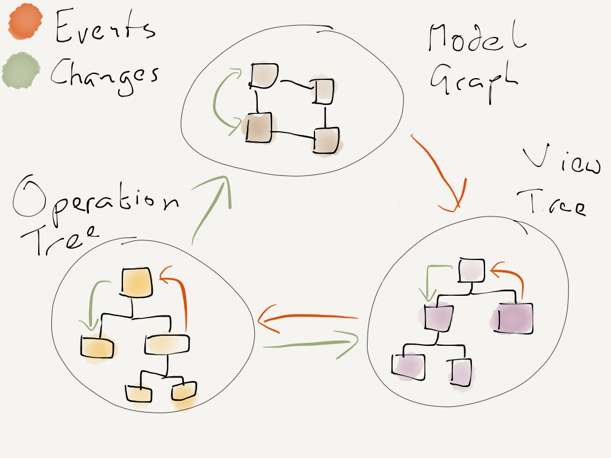
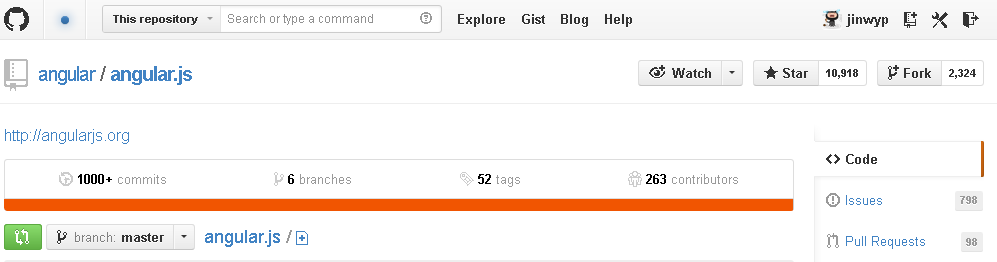
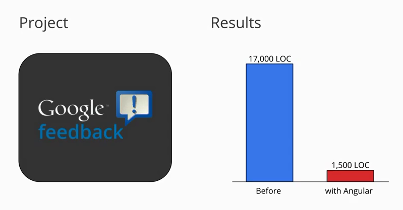

HTML enhanced for web apps!
Easy for build SPA Single Page App!
Created by @JinWYP / Twitter/ 新浪微博
一个写代码的产品经理 Blog
什么是AngularJS ?
全功能的Javascript 开源 前端框架
Design by Google
并且与其他库可以同时使用
developed in 2009 by Miško Hevery
为什么选择 Angular ?
目前: 后端语言PHP ＋ JS + Html 后端语言渲染模板
而且是通常是 后端语言 渲染HTML模板
例如 CodeIgniter MVC 的View模板
Angular 设计原则
VS Backbone
MVC or MRV
Router / Model & Collection / View
VS Ember.js or Other Framework
MOVE，即 Models（模型）、Operations（操作）、Views（视图）、Events（事件）
 Will MDV become a standard?Angular 成熟度
经过四年的发展 框架成熟度高
Stable 1.0.7 / Unstable 1.1.5
Angular 入门容易
社区活跃
Google feedback 项目
Localytics 项目
Biggie Smalls曾说过：“代码越多，问题也就越多”。
Using AngularJS at Localytics Localytics 使用 AngularJS 经验 代替Backbone 代码减一半
Angular's 3D
Date Binding 数据绑定
Directive 指令与自定义指令
Dependency Injection 依赖注入
Angular's MVC
Router, Modules
Views, Templates, Controller/Scope/ViewModel
Model, Factory Service
Testing
Angular's Other Feature
内置了类似jQueryLite
Validation
Filters
Angular's 3D
Date Binding 数据绑定
- Let's Start. Download Angular 官方 1.1.5
- Demo1 数据绑定
- AngularJS WebInspector Extension for Chrome 视频
- underscore
Angular's 3D
Directive 指令与自定义指令
AngularJS有一套完整的、可扩展的、用来帮助web应用开发的指令集，
它使得HTML可以转变成“特定领域语言(DSL) Domain-Specific Language。
Angular's Directive 指令
“x-”，“data-”来让它符合html的验证规则。这里有以下可以用的指令名称例子：ng:bind, ng-bind, ng_bind, x-ng-bind , data-ng-bind
指令可以做为元素名，属性名，类名，或者注释。下面是一些等效调用myDir指令的例子：
Angular's 3D Directive 指令
Angular 表达式 expression
常用指令 : ngapp ngController ngClick ngCloak ngClass ngRepeat
{{item.name}}
{{item.name}}
{{item.name}}
{{item.name}}
ngClass 表达式
- a string of space-delimited class names, 单一样式名称
- an array of class names 样式名称数组
- a map/object of class names to boolean values. 对象,应用多个样式
ngRepeat 表达式 循环
- $index – {number} – iterator offset of the repeated element (0..length-1)
- $first – {boolean} – true if the repeated element is first in the iterator.
- $last – {boolean} – true if the repeated element is last in the iterator.
- $middle – {boolean} – true if the repeated element is between the first and last in the iterator.
filter
Model Controller Scope View-Model
ngRepeat 是如何工作的?
自定义指令
Works in Mobile Safari
Try it out! You can swipe through the slides and pinch your way to the overview.
Marvelous Unordered List
- No order here
- Or here
- Or here
- Or here
Fantastic Ordered List
- One is smaller than...
- Two is smaller than...
- Three!
Transition Styles
You can select from different transitions, like:
Cube -
Page -
Concave -
Zoom -
Linear -
Fade -
None -
Default
Themes
Reveal.js comes with a few themes built in:
Sky -
Beige -
Simple -
Serif -
Night -
Default
* Theme demos are loaded after the presentation which leads to flicker. In production you should load your theme in the <head> using a <link>.
Global State
Set data-state="something" on a slide and "something"
will be added as a class to the document element when the slide is open. This lets you
apply broader style changes, like switching the background.
Custom Events
Additionally custom events can be triggered on a per slide basis by binding to the data-state name.
Reveal.addEventListener( 'customevent', function() {
console.log( '"customevent" has fired' );
} );
Slide Backgrounds
Set data-background="#007777" on a slide to change the full page background to the given color. All CSS color formats are supported.
Image Backgrounds
<section data-background="image.png">Repeated Image Backgrounds
<section data-background="image.png" data-background-repeat="repeat" data-background-size="100px">Background Transitions
Pass reveal.js the backgroundTransition: 'slide' config argument to make backgrounds slide rather than fade.
Background Transition Override
You can override background transitions per slide by using data-background-transition="slide".
Clever Quotes
These guys come in two forms, inline:
“The nice thing about standards is that there are so many to choose from”
and block:
“For years there has been a theory that millions of monkeys typing at random on millions of typewriters would reproduce the entire works of Shakespeare. The Internet has proven this theory to be untrue.”
Pretty Code
function linkify( selector ) {
if( supports3DTransforms ) {
var nodes = document.querySelectorAll( selector );
for( var i = 0, len = nodes.length; i < len; i++ ) {
var node = nodes[i];
if( !node.className ) ) {
node.className += ' roll';
}
};
}
}
Courtesy of highlight.js.
Intergalactic Interconnections
You can link between slides internally, like this.
Fragmented Views
Hit the next arrow...
... to step through ...
any type- of view
- fragments
Fragment Styles
There's a few styles of fragments, like:
grow
shrink
roll-in
fade-out
highlight-red
highlight-green
highlight-blue
Spectacular image!

Export to PDF
Presentations can be exported to PDF, below is an example that's been uploaded to SlideShare.
Take a Moment
Press b or period on your keyboard to enter the 'paused' mode. This mode is helpful when you want to take distracting slides off the screen during a presentation.